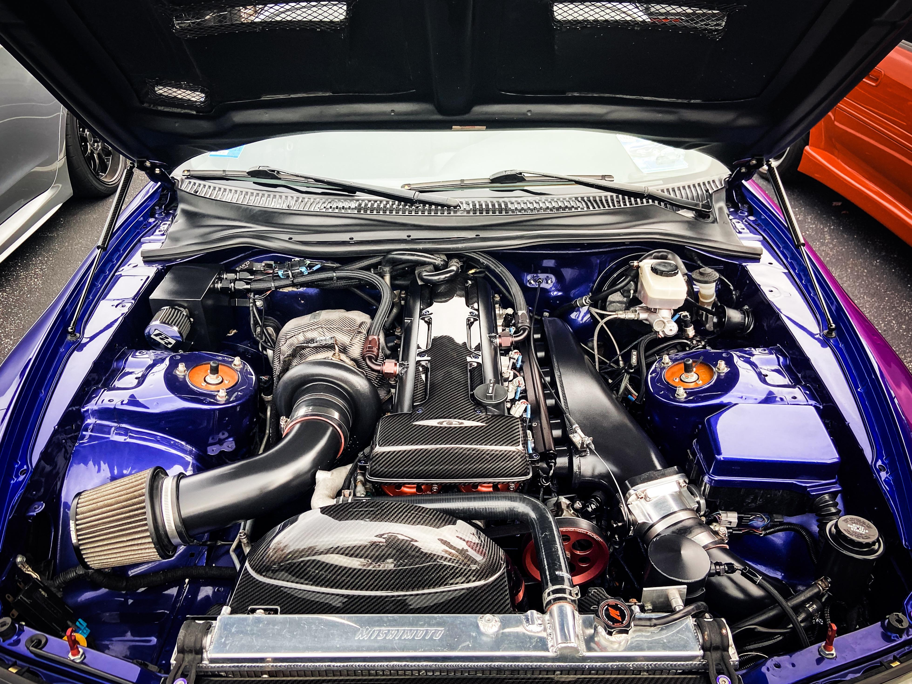

Información

Un vehículo de motor o vehículo a motor es un vehículo que se mueve gracias a un motor. Normalmente tiene cuatro ruedas y circula por carretera, a diferencia de los trenes o los tranvías, que van sobre raíles.
El motor puede ser de combustión, eléctrico o una combinación de ambos, como ocurre con los vehículos híbridos. También suelen tener una matrícula para identificarlos.
Generalmente, las sillas de ruedas autopropulsadas para personas con discapacidad no se consideran vehículos de motor.
Vehículos
En el año 2010 había más de mil millones de vehículos de motor en uso en todo el mundo. Estados Unidos tenía una de las mayores cantidades de vehículos por habitante y China se convirtió en uno de los principales mercados de coches nuevos.
Definición
Según la Convención sobre la Circulación Vial de Viena del 8 de noviembre de 1968, un vehículo de motor es un vehículo que tiene un motor de propulsión y puede circular por una vía por sus propios medios. Esta definición excluye algunos vehículos, como los que se desplazan sobre raíles.
La Convención de Viena sobre la Circulación Vial establece lo siguiente:
"Por vehículo de motor se entiende todo vehículo provisto de un motor de propulsión y que circule por una vía por sus propios medios, excepto algunas excepciones, como los vehículos que se desplazan sobre raíles."
Más información: Convención de Viena sobre Señalización Vial